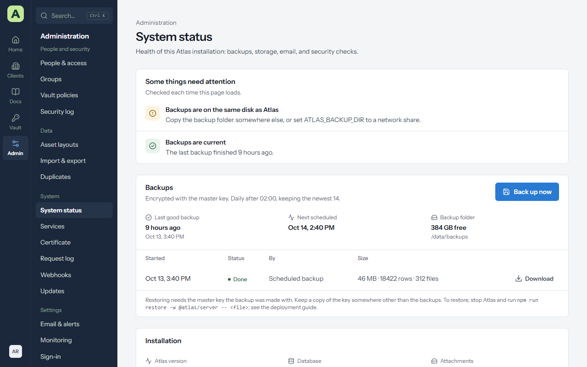
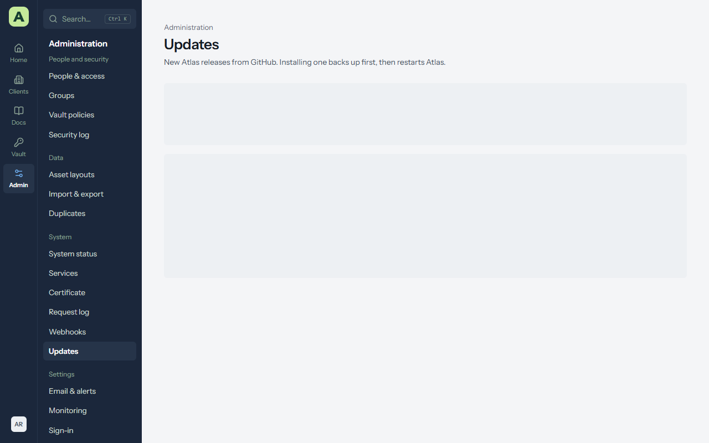
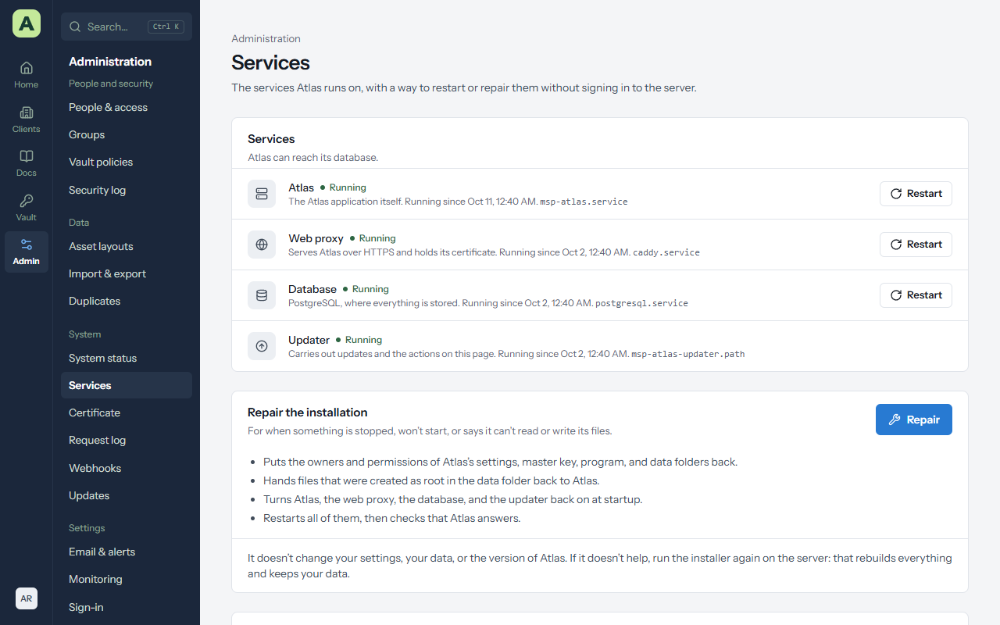

Chapter 14
Keeping Atlas healthy
Atlas looks after most things by itself: it backs up every night, renews its certificate, and tells you when something needs a person. This chapter explains what to check, what each warning means and what to do about it, and the procedures for backups, restores, updates and services. Most pages here are for administrators; Updates and Services act only on servers set up with the Linux installer.
How people reach Atlas, and its certificate, are in their own chapter: Remote access and HTTPS.
Every week
Ten minutes a week is enough:
- Open Admin → System status. The first card says Everything looks good, or Some things need attention with a list. Deal with each item using What each check means.
- On the same page, check the Backups card: the newest backup should be from last night and say it succeeded.
- Open Admin → Security log and choose Verify now. This checks that no event has been changed or removed since it was written. Do it at least every two days, or System status reminds you.
- Open Admin → Updates to see whether a new release is out, and read its notes.
- Once a month, copy a recent backup somewhere other than the server, and once a quarter, test that one restores (see Testing a backup).
System status


Admin → System status has three cards:
- The checks. Each line is green (OK), amber (Needs attention) or red (Problem), with what to do.
- Backups. The last good backup, when the next one runs, Back up now, and the history of recent backups, with who started each, its size, and Download.
- Installation. The Atlas version and when it started; the database's PostgreSQL version, size, and how many database updates are applied; how many attachments and the free space where they're kept; whether email is on and through which server; which master key is in use and whether older ones are still loaded; how many events the security log holds and when it was last verified; when the background tasks last ran; and the server's platform, Node.js version and address.
What each check means
| Check | Why it matters, and what to do |
|---|---|
| Automatic backups are off |
ATLAS_BACKUP_ENABLED is false, so nothing is backing Atlas up unless you do
it another way. Set it back to true and restart Atlas, or make sure another backup covers
both the database and the attachments folder.
|
| No backup yet | A new installation hasn't reached its first nightly backup. Choose Back up now. |
| The last backup is more than two days old | Backups have stopped. Look at the history for a failed row and its reason. The usual causes are a full disk, or a backup folder Atlas can't write to (a network share that's disconnected, or wrong permissions). |
| The newest backup file is missing | The history lists a backup that isn't in the folder any more. Someone moved or deleted it, or the share isn't mounted. Reconnect it, then choose Back up now. |
| The last backup failed | The reason is shown. Fix it and choose Back up now to confirm. |
| Backups are on the same disk as Atlas |
If that disk fails, you lose Atlas and its backups together. Set ATLAS_BACKUP_DIR to a
network share or another disk (see Where backups go), or copy the
folder off the server on a schedule.
|
| The data disk is almost full / The backup disk is almost full |
Less than 10% is free. Free some space or grow the disk before Atlas can't save attachments or
backups. Lowering ATLAS_BACKUP_KEEP keeps fewer backups.
|
| Email is not set up | Password resets, expiry alerts and digests can't be sent. Set it up under Admin → Email & alerts; see Settings. |
| Email uses Microsoft 365 SMTP sign-in | Microsoft is retiring basic authentication for SMTP. Switch to Microsoft 365 (app registration) before it stops working. |
| An old master key is still loaded | After a key rotation, the database no longer needs the old key, but backups made before the rotation still do. Keep a copy of it for as long as you keep those backups, then remove it from the server. See The master key. |
| The security log has not been checked recently | Nobody has chosen Verify now in two days. Open the security log and choose it. |
| N accounts haven't been used in 60 days | Access nobody uses is access nobody would notice being misused. Disable the accounts people no longer need under Admin → People & access. |
| N API keys haven't been used in 60 days | Revoke keys nothing uses any more under Admin → API keys. |
| Node.js … stops getting security fixes on … | The runtime under Atlas is nearing its end of life. Move the server to the version named; see Moving to Node.js 24. |
| Node.js … is older than Atlas supports / PostgreSQL … is older than Atlas supports | Atlas needs a newer runtime or database. Take a backup, then upgrade it. |
| Database updates are pending | Atlas was updated but hasn't applied its database changes. Restart Atlas, from Admin → Services or on the server. |
Backups
Every night, after 02:00 server time, Atlas writes one encrypted file, such as
atlas-20261111-020000.atlasbak, holding the whole database and every attachment. It keeps the
newest 14 and deletes older ones from the backup folder.
- What's in it: every client, asset, document, password, setting, account and the security log, plus every attached file. It's taken from one consistent snapshot, so people can keep working while it runs.
-
What isn't: sign-in sessions (everyone signs in again after a restore), and the server's
own settings files:
atlas.env, the master key, the Caddyfile andaccess.conf. Keep a copy of those yourself; you'll need the master key above all. - How it's protected: AES-256-GCM, with a key derived from the master key. Without the master key it was made with, a backup can't be read, and a file that has been changed or cut short is detected and refused.
Making and downloading a backup
- Open Admin → System status and choose Back up now. The button shows Backing up…, and the new backup appears at the top of the history when it's done. This is written to the security log as Backup started.
- To save a copy, choose Download on its row. Atlas asks for your password again, because the file holds everything, and writes Backup downloaded to the security log.
Store downloaded copies somewhere safe and separate from the master key. Anyone with both can read every password in Atlas.
Atlas also takes a backup by itself before every update, and before Erase all data.
Where backups go
Backups go in ATLAS_BACKUP_DIR. By default that's a backups folder inside the data
folder, on the same disk as Atlas, which System status warns about.
| Setting | Default | What it does |
|---|---|---|
ATLAS_BACKUP_ENABLED |
true |
Turns the nightly backup on or off. |
ATLAS_BACKUP_DIR |
<data folder>/backups |
Where backup files are written. Ideally a network share or another disk. |
ATLAS_BACKUP_HOUR |
2 |
The hour (server time, 0 to 23) after which the nightly backup runs. |
ATLAS_BACKUP_KEEP |
14 |
How many backup files to keep. Older ones are deleted. |
To change one on a Linux server, edit /etc/msp-atlas/atlas.env as root, then restart Atlas with
sudo systemctl restart msp-atlas. A network share must be mounted at startup (for example in
/etc/fstab) and writable by the atlas user. On Windows, rerun the installer with
-BackupDir \\nas\atlas-backups; the service account (LocalSystem, which uses the computer's
account on the network) needs write access to the share. In Docker, set them in .env and mount
the folder into the container.
Restore a backup
Restoring replaces what's in Atlas with what was in the backup. Anything changed since the backup was made is lost, so use it to recover from a disaster or to move Atlas to a new server, not to undo one mistake (most items have their own history and Restore for that).
There are two ways: from System status in Atlas, which works on every kind of install, or from the server's command line, for when Atlas won't start.
Restoring from Atlas
Only the owner can restore. Administrators see the last result.
- Open Admin → System status, and find the Restore from a backup card, below Backups.
-
Choose the backup:
- Backup in the backup folder lists the backups on the server, newest first, including ones made before an earlier restore;
-
or Or upload a backup file: an
.atlasbakfile from this or another Atlas, up to 20 GB.
-
Master key for this backup. Leave it empty if this Atlas made the backup with the key it
uses now. For a backup from another installation, or from before a key rotation, paste that key: the
43-character value from the old installation's
master.key(oratlas-master.key) or itsATLAS_MASTER_KEY. - Choose Check backup. Atlas reads the whole file and shows when it was made, the Atlas version, how many rows, tables and files it holds, and the fingerprint of the key it needs. If the key is wrong, the message names the key the backup needs.
-
Decide on Overwrite current values:
- Off adds back only what's missing, and keeps everything that's there now, including changes made since the backup. Use it to recover deleted items. The backup must be from the same Atlas version.
- On replaces the whole database and every attachment with the backup's. Anything changed since the backup is lost, and everyone signs in again. Use it to recover from a disaster or to move Atlas from another server.
- Enter Your password.
- Choose Restore backup, or, with overwrite on, Overwrite and restore…. The dialog Overwrite the database? asks you to tick I understand this overwrites the current database for everyone and type the organization's name, so it can't happen by accident.
- Atlas takes a safety backup, named Before restoring a backup, then restarts and installs the backup as it starts, before anything else runs. The page reconnects by itself. Linux, Docker and Windows service installs start again on their own; if you run Atlas by hand, start it again yourself.
- Sign in again if you overwrote, and check Last restore on System status: Restored, Put back as it was (the restore failed, and the safety backup was put back), or Failed, with the reason.
Passwords and other secrets from a backup made with another installation's key are re-encrypted with this installation's key, so you don't need to keep the old key loaded afterwards. Each step is in the security log: Backup restore requested, then Backup restored, Backup restore rolled back or Backup restore failed.
Restoring from the command line
Use this when Atlas itself won't start. You need:
- the
.atlasbakfile, copied onto the server; -
the master key it was made with. If the key was rotated since, both the old and the new key must be loaded:
in
/etc/msp-atlas/master.key, one key per line, newest first; - shell access to the server as an administrator (root on Linux).
On a server set up with the Linux installer:
- Check the file first. This reads the whole file and lists what's in it, without changing anything:
cd /opt/msp-atlas
sudo runuser -u atlas -- node --env-file=/etc/msp-atlas/atlas.env apps/server/dist/cli/backup.js verify /path/to/atlas-20261111-020000.atlasbak- Stop Atlas, so nobody changes anything during the restore:
sudo systemctl stop msp-atlas-
Restore.
--replaceerases the current database and attachments before loading the backup. Without it, the restore refuses to run into a database that already has data in it, which protects you from overwriting the wrong server:
sudo runuser -u atlas -- node --env-file=/etc/msp-atlas/atlas.env apps/server/dist/cli/restore.js /path/to/atlas-20261111-020000.atlasbak --replace- Start Atlas and sign in again:
sudo systemctl start msp-atlas- Check it. Open a few clients and passwords, open Admin → Security log and choose Verify now (it still passes after a restore), and look at System status.
The restore checks the whole file before it erases anything, so a damaged file, or the wrong master key, stops it with nothing changed. It prints how many rows, tables and files it restored, and whether any attachment was already missing when the backup was made. A backup from an older version of Atlas is loaded as it was, then upgraded to the running version.
Docker:
docker compose -f deploy/docker-compose.yml stop app
docker compose -f deploy/docker-compose.yml run --rm app npm run restore -w @atlas/server -- /data/backups/<file> --replace
docker compose -f deploy/docker-compose.yml start app
Windows: stop the MSPAtlas service, then in the Atlas folder run
node --env-file="C:\ProgramData\MSP Atlas\atlas.env" apps\server\dist\cli\restore.js <file>
--replace
from an elevated prompt, and start the service again.
Moving Atlas to a new server
-
On the old server, choose Back up now and download the backup. Copy
master.key(andatlas.env, for reference) somewhere safe. - Install Atlas on the new server with the installer, using the same address. Don't create an owner account.
-
Put the old master key into the new server's
/etc/msp-atlas/master.key(replacing the one the installer made), then restore the backup with--replaceas above. - Point the address's DNS record, tunnel or proxy at the new server, and check Remote access and HTTPS.
Testing a backup
A backup you've never restored is a hope, not a plan. Every few months, install Atlas on a spare virtual machine, restore a recent backup into it with its master key, and check you can sign in and open passwords. Then delete the machine. On the copy, use a different address, and don't turn on email, so it doesn't send alerts.
Updates


Admin → Updates lists the published releases newer than the one you're running, with their
release notes, from the repository Atlas updates from (ATLAS_UPDATE_REPO, normally
ithealthtech/nexus-atlas). Every administrator can see it.
Installing an update
On servers set up with the Linux installer:
- Read the release notes. Anything you need to do before or after is there.
- Choose Install on the release. Atlas asks for your password again.
- The page follows the update. Atlas takes a backup, installs the release, rebuilds, restarts, and checks that the new version answers. This takes a few minutes, during which Atlas is unavailable for a moment while it restarts.
- When it's done, reload the page. What's new shows the changes.
If the new version doesn't start, Atlas goes back to the previous version by itself. If the new version had already updated the database, it also restores the backup taken just before the update, so the previous version gets the database it knows. The Updates page says which of these happened. Anything changed in Atlas while the update was being prepared (a few minutes) is lost in that case.
Every update is written to the security log. The update's full log is in
/var/lib/msp-atlas-updater/last-update.log on the server.
From the server instead: sudo atlas-install installs the newest release, or
sudo atlas-install --version v2.4.1 a particular one. It keeps your settings, master key,
database and remote access choice.
Docker: pull the new image (or change its tag in the Compose file) and run
docker compose -f deploy/docker-compose.yml --env-file .env up -d.
Windows: extract the new package over the old folder and run
Install-Atlas.ps1 again with no arguments. Both see the Updates page read-only. Take a backup
first.
Services


Admin → Services shows the four parts Atlas runs on, whether each is Running, Starting, Stopped, Failed or Not installed, and since when. It works on servers set up with the Linux installer; Docker and Windows installs see how to restart their own way.
| Service | What it is |
|---|---|
| Atlas | The Atlas application itself (msp-atlas). |
| Web proxy | Caddy, which serves Atlas over HTTPS and holds its certificate. |
| Database | PostgreSQL, where everything is stored. |
| Updater | The helper that carries out updates, these actions, and remote access changes. |
Restarting a service
Choose Restart on a service, read what it will do, and confirm. Atlas asks for your password again.
- Restarting Atlas makes it unavailable for a few seconds. Nobody is signed out, but anything unsaved in an open form may be lost, and an import or sync that is running stops.
- Restarting the web proxy drops everyone's connection for a moment. The page reconnects by itself. This also makes it fetch a fresh certificate if one is stale.
- Restarting the database restarts Atlas with it. Atlas is unavailable for up to a minute.
Repair
Repair is for when something won't start, or Atlas says it can't read or write a file. It
puts the owners and permissions of Atlas's settings, master key, program and data folders back as the
installer set them, hands files in the data folder that were created by root back to Atlas, turns the services
back on at startup, restarts all of them, and checks that Atlas answers. Atlas is unavailable for up to a
minute. It doesn't change your settings, data, address or version. If it doesn't help, run
sudo atlas-install on the server, which also rewrites the service files.
Every action is written to the security log as Service action requested. The helper does one thing at a time, so an action waits for an update to finish and the reverse.
When Atlas itself is down
If you can't reach Atlas at all, use the server's console:
| To | Run |
|---|---|
| See whether Atlas is running, and why it stopped |
sudo systemctl status msp-atlas and sudo journalctl -u msp-atlas -n 50
|
| Restart Atlas | sudo systemctl restart msp-atlas |
| Restart the web proxy | sudo systemctl restart caddy |
| Restart the database | sudo systemctl restart postgresql |
| Bring the helper back, if actions stay waiting | sudo systemctl restart msp-atlas-updater.path |
| Reinstall the current version, keeping everything | sudo atlas-install |
/healthz answers when Atlas is running, and /readyz when it can also reach its
database: curl http://127.0.0.1:4318/readyz on the server.
If something goes wrong
| Problem | What to do |
|---|---|
| Someone is locked out after too many attempts | Wait 15 minutes, or use Reset sign-in on their account. |
| The owner lost their phone and recovery codes | Another owner or administrator can reset their sign-in. If there is none, contact whoever runs the server. |
| Atlas can't read or write a file, or a service is stopped | Admin → Services: restart it, or Repair. |
| Browsers warn about the certificate | See The certificate. |
| Atlas doesn't open after changing how it's reached | See Getting back in from the server. |
| Backups are failing | Read the reason in the backup history, then the matching row in What each check means. |
| Verify now reports a break | Someone changed the database directly. Keep the server as it is, export the security log, and investigate before restoring anything. |